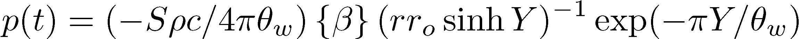
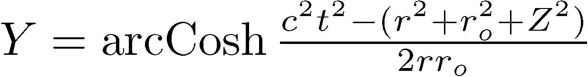
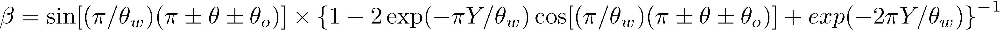
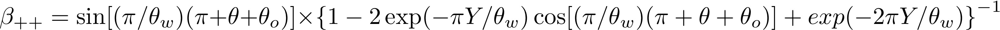
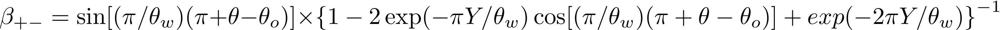

I'm told that acoustic diffraction is sometimes shrouded with a sense of mystery.
This is, in part, because it is defined negatively: It is the part of the solution to the linear wave equation which remains when the specular approximation is subtracted from it.
There are several ways of conceptualizing acoustic diffraction, and many models,
each approach being best suited to a particular application.
The aim of this document is to communicate the practical information as quickly as possible.
If this document does not quench your curiosity, additional resources are at the bottom.
This bit implements the solution derived in Medwin's 1982 paper.
This paper was significant because it was the first time a transient solution for diffraction around the edge of a wedge was derived. All prior solutions assumed the source was continuous, or cyclically repeating eternally. This distinction makes the solution appropriate for use in calculating impulse responses applied to impulsive sources.
The tip of the wedge in the image below is the origin. The edge of the wedge, is the z axis. The edge is finite, and extends from z1= meters to z2= meters from the origin.
The solid angle of the wedge, 360° - θw = °, or radians
Source Position:
In Cartesian Coordinates (x, y, z) = [ , , ] meters
In Cylindrical Coordiantes (r, θ, z) =[ meters, radians, meters]
Receiver Position:
In Cartesian Coordinates (x, y, z) = [ , , ] meters
In Cylindrical Coordiantes (r, θ, z) =[ meters, radians, meters]
The impulse to the right is first order edge diffraction, calculated using the equations below, and reproduced from [2].



 

Well, that's lovely... but what's the point ?
- This theory can be used to predict the amplitude of noise diffracted around barriers.
- The theory above can be applied to EVERY wedge in a geometry that sound is incident upon, the superposition of all the solutions would give the impulse response of the diffracted field.
Resources Consulted
[1] The format for this page was shamelessly stolen from http://worrydream.com/Tangle/ , call it an homage.
[2] Medwin, H., Childs, E., & Jebsen, G. M. (1982). Impulse studies of double diffraction: A discrete Huygens interpretation. Journal of the Acoustical Society of America, 72(September), 1005–1013.
[3] JavaScript: The Good Parts by Douglas Crockford. Copyright 2008 Yahoo! Inc., 978-0-596-51774-8
[4] Hart, C. R. (2014). On a combined adaptive tetrahedral tracing and edge diffraction model. University of Nebraska - Lincoln. Retrieved from http://digitalcommons.unl.edu/archengdiss/29/
Assembled in 2014 by Amanda.Blair.Lind@gmail.com